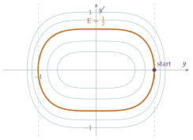

STEP III 2013, Question 7
Read the question before you go on. It is in the STEP Support Programme’s question database: step.maths.org/questions/13-s3-q7
The hook
Most differential equations cannot be solved. There is no formula for the solution of \(y'' + y^3 = 0\) in terms of familiar functions, let alone for the monster in part (iii). Yet we can still say a great deal about the solutions: that they stay bounded, that they oscillate, that they settle down. The trick is to find a quantity, built from the solution and its derivative, that never increases. Then the solution is trapped.
In physics, that quantity is usually energy. A ball rolling in a bowl cannot climb higher than its starting height, because energy is conserved, or, with friction, decreases. This question applies the same reasoning to three equations, the last of them chosen so that you have to invent the “energy” yourself. The method, due to Aleksandr Lyapunov in 1892, is one of the most important tools in the study of differential equations.
Before you start
For part (i), think of \(y\) as the position of a particle and \(x\) as time. Then \(y'' = -y^3\) is Newton’s law with force \(-y^3\). What are the kinetic and potential energies?
The kinetic energy is \(\frac12(y')^2\) (taking mass \(1\)), and the force \(-y^3\) comes from the potential \(V(y) = \frac14y^4\), since force is \(-V'(y)\). The total energy is \(\frac12(y')^2 + \frac14y^4\), which is half of \(\mathrm{E}\). Conservation of energy is exactly the statement that \(\mathrm{E}\) is constant.
Working it through
Stage 1 Conservation
By the chain rule, \[\frac{\mathrm{d}\mathrm{E}}{\mathrm{d}x} = 2y'y'' + 2y^3y' = 2y'\bigl(y'' + y^3\bigr) = 0.\] So \(\mathrm{E}\) is constant, equal to its value at \(x = 0\): \(\mathrm{E} = 0 + \frac12 = \frac12\). Since \((y')^2 \geq 0\), we get \(\frac12y^4 \leq \frac12\), so \(y^4 \leq 1\) and \(|y| \leq 1\).■
The solution oscillates between \(-1\) and \(1\), tracing the closed curve \((y')^2 + \frac12y^4 = \frac12\) in the \((y, y')\) plane (Figure 8.2.1).
Stage 2 Dissipation
Differentiate \(\mathrm{E} = (v')^2 + 2\cosh v\). Use the differential equation to replace \(v''\). What sign does the result have?
\[\frac{\mathrm{d}\mathrm{E}}{\mathrm{d}x} = 2v'v'' + 2\sinh v\,v' = 2v'\bigl(v'' + \sinh v\bigr) = 2v'\bigl(-xv'\bigr) = -2x(v')^2 \leq 0 \quad\text{for } x \geq 0.\] The term \(xv'\) acts like friction, and it removes energy. So \(\mathrm{E}(x) \leq \mathrm{E}(0)\) for \(x \geq 0\). At \(x = 0\), \(\cosh(\ln 3) = \frac{3 + \frac13}{2} = \frac53\), so \(\mathrm{E}(0) = \frac{10}{3}\). Hence \[2\cosh v \leq (v')^2 + 2\cosh v = \mathrm{E}(x) \leq \tfrac{10}{3}, \qquad\text{so}\qquad \cosh v(x) \leq \tfrac53. \qed\]
Stage 3 Inventing the energy
Part (iii) gives no hint. We need a function \(\mathrm{E} = (w')^2 + F(w)\) that does not increase.
If \(\mathrm{E} = (w')^2 + F(w)\), then \(\mathrm{E}' = 2w'w'' + F'(w)w'\). What should \(F'(w)\) be, so that the equation can be used to replace \(w''\) and leave only a multiple of \((w')^2\)?
We want \(\mathrm{E}' = 2w'\bigl(w'' + w\cosh w + 2\sinh w\bigr)\), so we need \(F'(w) = 2(w\cosh w + 2\sinh w)\). Since \(\frac{\mathrm{d}}{\mathrm{d}w}(w\sinh w) = \sinh w + w\cosh w\), we can take \[F(w) = 2w\sinh w + 2\cosh w, \qquad \mathrm{E} = (w')^2 + 2w\sinh w + 2\cosh w.\] Then, using the equation, \[\frac{\mathrm{d}\mathrm{E}}{\mathrm{d}x} = -2(5\cosh x - 4\sinh x - 3)(w')^2.\]
Show that \(5\cosh x - 4\sinh x - 3 \geq 0\) for all \(x\). (Write it in terms of \(e^x\) and look for a perfect square.) Then finish the argument.
\(5\cosh x - 4\sinh x - 3 = \frac52(e^x + e^{-x}) - 2(e^x - e^{-x}) - 3 = \frac12e^x - 3 + \frac92e^{-x} = \frac12\bigl(e^{x/2} - 3e^{-x/2}\bigr)^2 \geq 0\). So \(\mathrm{E}\) never increases. At \(x = 0\), \(\mathrm{E}(0) = \frac12 + 0 + 2 = \frac52\). Since \(w\sinh w \geq 0\) for every \(w\) (both factors have the same sign), \[2\cosh w \leq (w')^2 + 2w\sinh w + 2\cosh w = \mathrm{E}(x) \leq \tfrac52, \qquad\text{so}\qquad \cosh w(x) \leq \tfrac54. \qed\]

Looking back
Multiply by \(y'\). In each part, \(\mathrm{E}'\) was \(2y'\) times the left-hand side of the equation, plus whatever was left over. That leftover term decided whether \(\mathrm{E}\) was conserved or decreasing.
Energy bounds position. Since the kinetic part \((y')^2\) is non-negative, a bound on \(\mathrm{E}\) is a bound on the potential part, and hence on \(y\).
Spot hidden squares. The damping coefficient in part (iii) looked as if it might change sign, but it was a perfect square in disguise.
What’s really going on
In his 1892 doctoral thesis, Aleksandr Lyapunov studied the stability of motion: if a system is disturbed slightly from equilibrium, does it return, or wander away? His “second method” was to find a function, now called a Lyapunov function, that is smallest at the equilibrium and never increases along solutions. Then solutions that start near the equilibrium stay near it. The beauty of the method is that it needs no formula for the solutions, only the differential equation itself, which is exactly what this question demonstrates. Lyapunov functions are now used to prove the stability of everything from aircraft control systems to power grids to ecosystems.
Energy in physics and engineering
Part (i) is a nonlinear oscillator: like a spring, but with a restoring force proportional to the cube of the displacement. Unlike a simple harmonic oscillator, its period depends on its amplitude (larger oscillations are faster), but energy conservation still confines it. Part (ii) adds damping that grows with time, and energy drains away. In engineering, energy methods are used to show that structures will not shake themselves apart and that control systems will not oscillate out of control. In the theory of partial differential equations, “energy estimates” of this kind are the main tool for proving that solutions exist and behave well; questions about the equations of fluid flow, including one of the Millennium Prize Problems (the Navier–Stokes problem), come down to whether such bounds can be found.
The thinking skill
If you cannot solve an equation, look for a quantity built from the solution whose derivative has a definite sign. It will bound the solution.
The search is guided by physics (“what is the energy?”) and by algebra (“what must I add so that the derivative collapses?”). Part (iii) shows the algebraic route when there is no physical intuition to lean on.
Try this next
Simple harmonic motion. For \(y'' + y = 0\) with \(y(0) = A\), \(y'(0) = 0\), find the conserved energy and deduce \(|y| \leq A\). Check against the exact solution.
The pendulum. The angle \(\theta\) of a pendulum satisfies \(\theta'' + \sin\theta = 0\) (in suitable units). Show that \((\theta')^2 - 2\cos\theta\) is constant. If the pendulum starts at rest at angle \(\theta_0\), where \(|\theta_0| \leq \pi\), show that \(|\theta|\) never exceeds \(|\theta_0|\). What goes wrong if \(|\theta_0| > \pi\)?
Damping. For \(y'' + 2ky' + y = 0\) with \(k > 0\), show that \((y')^2 + y^2\) decreases. Does it necessarily tend to zero?
An escape. For \(y'' - y^3 = 0\) with \(y(0) = 1\), \(y'(0) = 0\), find a conserved quantity and show that \(y\) is not bounded by it. What goes wrong?
Further reading
Steven Strogatz, Nonlinear Dynamics and Chaos (CRC Press). Chapters 6 and 7 cover phase planes, conservative systems and Lyapunov functions.
D. W. Jordan & P. Smith, Nonlinear Ordinary Differential Equations (Oxford University Press). A standard undergraduate text with many examples of energy methods.
Keith Devlin, The Millennium Problems (Basic Books). Includes an accessible account of the Navier–Stokes problem.